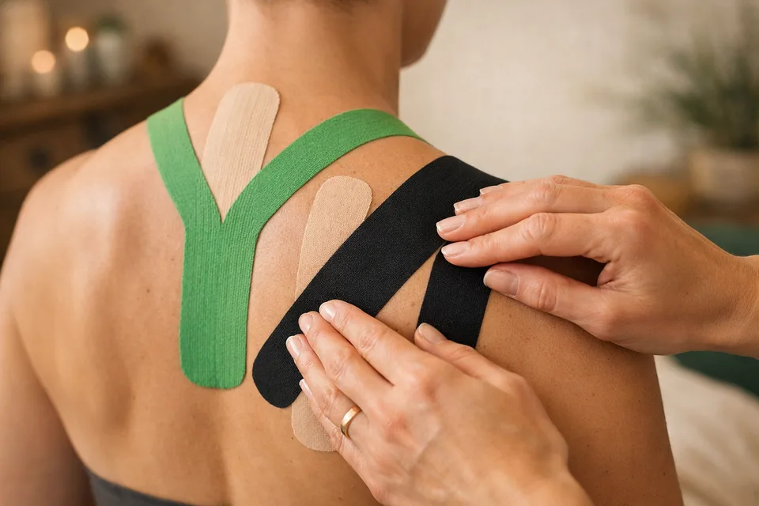
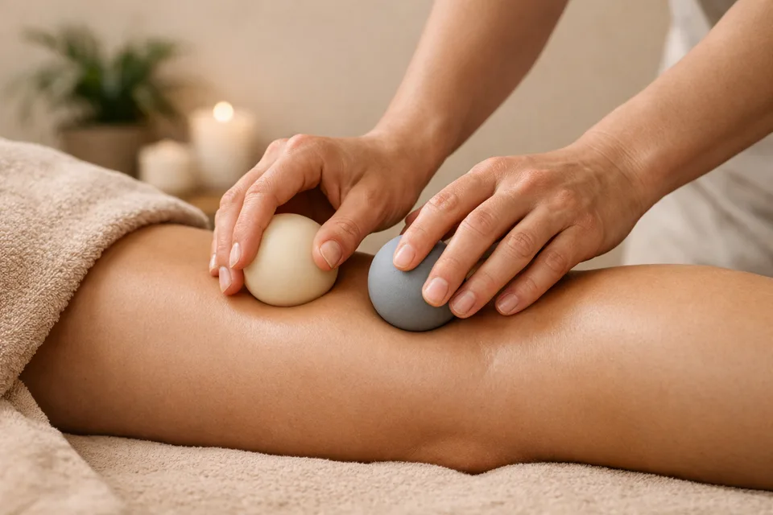
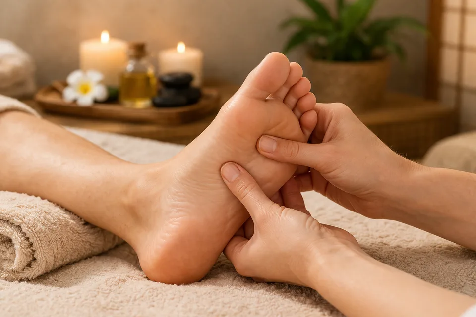

Klasická masáž
Pomáhá uvolnit přetížené svaly, zmírnit napětí a podpořit přirozenou regeneraci těla. Přináší úlevu při únavě, ztuhlosti i dlouhodobém přetížení.
tejpování • baňkování
Dornova metoda
Úleva pro záda, šíji i mysl. Klidná péče přesně tam, kde ji tělo potřebuje.
Každá návštěva začíná krátkou domluvou. Společně vybereme péči, která dává smysl právě vám. Pro vaši představu zde nabídka jednotlivých druhů včetně orientační doby trvání.
Pomáhá uvolnit přetížené svaly, zmírnit napětí a podpořit přirozenou regeneraci těla. Přináší úlevu při únavě, ztuhlosti i dlouhodobém přetížení.
Jemná technika podporující tok lymfy a odvod přebytečných tekutin z těla. Přispívá k pocitu lehkosti, regeneraci organismu a celkové rovnováze.
Šetrná manuální metoda zaměřená na srovnání kloubů a páteře. Pomáhá obnovit přirozené postavení těla a ulevuje při bolestech zad či pohybových potížích.
Cílená práce s bolestivými spoušťovými body ve svalech. Pomáhá uvolnit hluboké napětí a zmírnit bolest, která se často přenáší i do jiných částí těla.
Metoda, využívající podtlak k prokrvení a uvolnění zatuhlých svalů, podporuje regeneraci a přirozené ozdravné procesy těla. Je nedílnou součástí klasické masáže.
Pomáhá odlehčit namáhaným svalům a podpořit stabilitu vybraných míst při běžném pohybu i rekonvalescenci. Samostatná péče i navázání na masáž.
Citlivá práce s reflexními body na chodidlech přináší úlevu a zároveň působí harmonizačně na celé tělo. Příjemná volba pro zklidnění i regeneraci.
Šetrná technika, která využívá přirozený průběh hoření svíce k uvolnění napětí. Harmonizuje tělo, zbavuje bolesti, zánětů i stresu.
Příjemná hřejivá péče pro ruce nebo nohy, která pomáhá změkčit pokožku, uvolnit drobné napětí a dopřát tělu klidnější doznění po hlavní terapii.
Klidnější forma péče zaměřená na nejčastěji přetížené partie. Pomáhá uvolnit ramena, šíji i horní část zad a přináší příjemnou úlevu po náročném dni.
Jemná péče zaměřená na uvolnění čelistí, spánků, šíje a vlasové části hlavy. Pomáhá při napětí, únavě i ve chvíli, kdy si chcete dopřát klidnější zastavení.
Práce se zvukem podporuje zklidnění, uvolnění a jemné naladění organismu. Vhodná pro chvíle, kdy tělo potřebuje oddech a mysl vypnout.
Masážím se věnuji od roku 2017. Původně jsem začala kurzem tejpování, to jsem ale ještě netušila, kam až mě tahle cesta zavede. Postupně jsem objevovala nové a nové techniky, kurzy přibývaly, a čím víc jsem toho uměla, tím víc mě práce s tělem bavila. Dnes při masírování přirozeně propojuji všechno, co jsem se za ty roky naučila. Každé tělo reaguje jinak, proto při masáži nevycházím z jedné dané techniky, ale z toho, co právě dává smysl. V průběhu vnímám, co se v těle děje, a podle toho péči přirozeně přizpůsobuji. Důležitý je pro mě také klid, pozornost a citlivý přístup, díky kterému může přijít skutečná úleva.
základní kurz tejpování
další specializace tejpování (děti, těhotné, neurologie)
intenzivní kurz klasických masáží
trigger point terapie
Dornova metoda
baňkování
relaxační terapie plosky nohy
terapie zvukem
svíčkování
lymfatické masáže těla a obličeje
kurz první pomoci
otevření vlastní praxe
Masérna na Velkém Ořechově je klidné místo pro krátkou domluvu i péči, která se přizpůsobí tomu, co právě potřebujete. Nečekejte nic strojeného, spíš příjemné komorní prostředí a lidský přístup.
Místnost je menší, útulná, poskytuje dostatek klidu a soukromí. Všechno je připravené tak, abyste se mohli pohodlně uvolnit a nerušil vás zbytečný spěch okolí.
Pár stručných odpovědí na to, na co se klienti ptají nejčastěji. Pokud budete chtít něco upřesnit, stačí se ozvat a vše spolu doladíme.
Masérnu mám na Velkém Ořechově v 1. patře budovy obecního úřadu. Vchod je z pravé strany a snadno ho poznáte podle označení. Pro pohodlnou cestu můžete využít i navigaci.
Cena se odvíjí od konkrétní služby – její délky i toho, co budete zrovna potřebovat. Předem se krátce domluvíme, co pro vás bude nejvhodnější. Platba probíhá na místě po skončení masáže a zaplatit můžete v hotovosti nebo pohodlně pomocí QR kódu.
Ano, dárkový poukaz je možné domluvit individuálně. Pokud chcete někomu dopřát masáž nebo terapii jako dárek, stačí se ozvat a vše spolu doladíme.
Při horečce, akutním zánětu, infekčním onemocnění nebo bezprostředně po úrazu. Při akutním stavu je vždy lepší se nejprve poradit s lékařem. Ne každá bolest je vhodná k okamžité masáži.
Nejjednodušší je zavolat. Pokud vám víc vyhovuje zpráva nebo e-mail, napište a společně doladíme termín i péči, která pro vás bude nejpříjemnější.
Přehled kurzů, které tvoří základ mé praxe.
Zajímá vás, jak to celé vlastně začalo?
Ahoj, jmenuji se Zdeňka a jsem maminkou dvou úžasných kluků. Svůj masérský sen jsem si postupně začala plnit už mnohem dřív, než se narodili. V roce 2017, aniž bych tušila, kam až mě tato cesta zavede, jsem se rozhodla pro svůj první kurz. Už ten jsem v kruhu rodiny a svých blízkých využila mnohem víc, než jsem čekala. A osud mě brzy vedl touto cestou dál.
Když jsem jela vlakem do Prahy za svým taťkou, který tam byl krátce po amputaci nohy, začaly na mě na internetu vyskakovat kurzy – jeden za druhým. Jeden z nich mě zaujal natolik, že jsem si ho ještě ve vlaku rovnou objednala. Byl to kurz tejpování. Dovedete si představit, jak mě po příjezdu překvapila taťkova ZATEJPOVANÁ noha? V tu chvíli to všechno do sebe tak zapadlo, že jsem se musela v duchu až pousmát. Právě tenhle moment mě utvrdil v tom, že jdu správným směrem, a březen 2017 se tak nesl ve znamení základního kurzu tejpování.

Pokračovací kurz jsem absolvovala ještě v září téhož roku v Brně, v říjnu pak tejpování dětí, těhotných a tejpování při neurologických potížích. A už stačilo? Opak byl pravdou. Začátek roku 2018 jsem odstartovala intenzivním tříměsíčním kurzem masáží. Učila jsem se na mnoha lidech, zvládla jak studium anatomie, tak praxi a úspěšně jej ukončila. Chuť učit se byla velká.

Další velký krok mě čekal v září 2018. V Brně jsem se pod vedením Zuzky Prouzové učila Dornovu metodu plus. Odjížděla jsem se srovnanou každou částí těla (a dávala se dohromady týden). Ano, i mé tělo bylo několik let poskládané jinak, než být mělo, a najednou se srovnalo.
Už jsem si myslela, že mám všechno, co jsem chtěla. Ale jedno mi přece jen chybělo – baňkování. Úžasná metoda, na kterou chodím ke své fantastické masérce už víc než 10 let (i maséři mají své maséry). Ten správný baňkovací kurz jsem našla v únoru 2019. Po kurzu jsem ještě čerpala zkušenosti od své masérky – a vracím se k nim (i k ní) dodnes.
Vzhledem k mému předchozímu profesnímu životu, kdy jsem se opravdu nezastavila a pořád stála na nohou, přišla otázka: Neexistuje nějaká masáž na bolavé nohy? A tak přišel tehdy na delší dobu poslední kurz, relaxační terapie plosky (2019).

Po prvním těhotenství, starání se o mimčo a probdělých nocích se zrodil další nápad. Tentokrát kurzy svíčkování a terapie zvukem. Ta je mimochodem úžasná právě pro děti. Zrealizovala jsem je koncem roku 2021. Ani rok 2022 nezůstal bez dalších výzev, a tedy i kurzů – lymfatické masáže těla a obličeje splnily očekávání. Na začátku druhého těhotenství v roce 2023 přišel na řadu víkendový kurz první pomoci, tentokrát i s manželem, protože - člověk nikdy neví...
V březnu 2026 jsem se rozhodla své dosavadní zkušenosti proměnit v pomoc ostatním. Dát tomu všemu jasný směr. A tak vzniklo mé vlastní studio. Místo, kde se tomu všemu můžu věnovat naplno. Všechno, co jsem se za ty roky naučila, se přirozeně potkává a dává smysl. A konečně dělám to, co mě opravdu baví. Naplno.
A budoucnost? Ta je zatím otevřená – plná možností, které se teprve ukážou. Možná další kurz... co třeba kraniosakrální terapie? Kdo ví. Vstupte do mého regeneračního světa a nechte se hýčkat. Těším se na vás!
Vaše Zdeňka


{kind=link}
{kind=link}
{kind=link}
{kind=link}